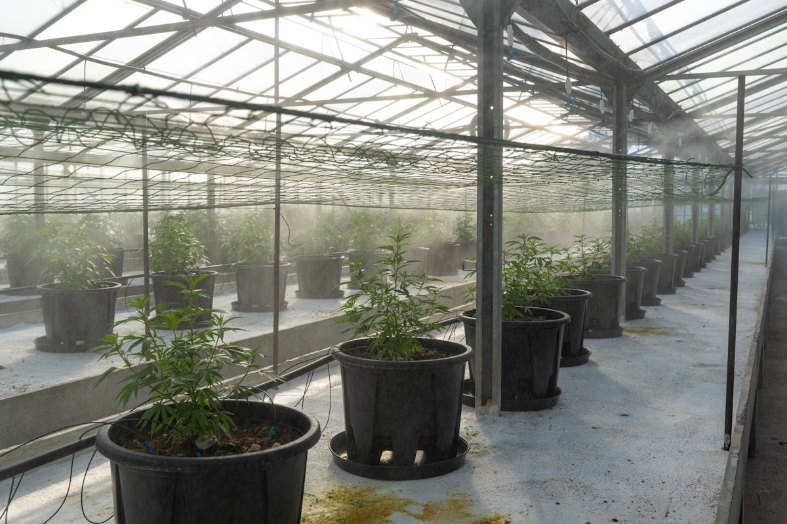
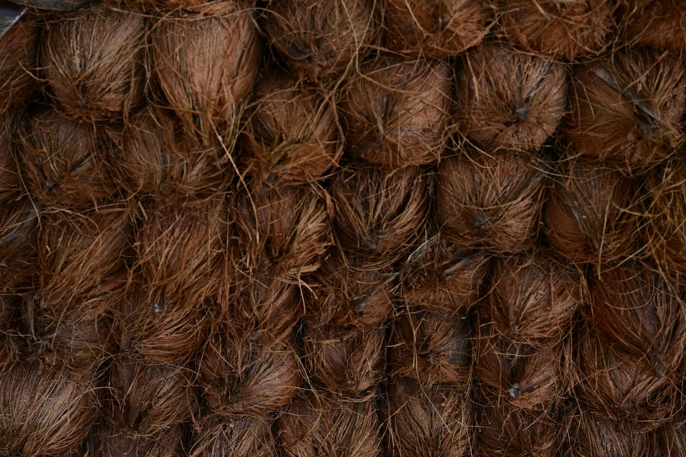
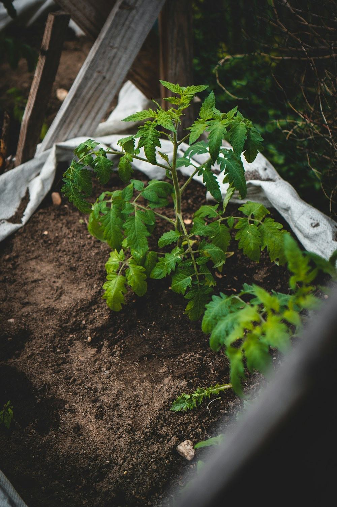

Grow bags & slabs
Ready-to-plant bags and uniform slabs for greenhouse and hydroponic cropping — the format most commercial growers work with day to day.
Growing media
Grow bags, slabs, blocks, bales, seed starter and open top planter bags — supplied to growers here and to buyers overseas.

The range
The same material, prepared three different ways depending on whether it is going into a greenhouse row, a shipping container or a propagation tray.

Ready-to-plant bags and uniform slabs for greenhouse and hydroponic cropping — the format most commercial growers work with day to day.

5 kg blocks and 25 kg bales. Compressed so they store and ship efficiently, and expand once wetted — which is what makes coir practical to send overseas.

Open top planter bags for nursery stock, vegetables and container growing, plus a fine seed starter grade for germination and early root development.
At a glance
If you already know the format you need, this is the fastest way to check we make it.
| Product | Format | Typically used for |
|---|---|---|
| Coco peat grow bags | Ready-to-plant bag | Greenhouse and hydroponic cropping |
| Coco peat slabs | Slab | Row cropping under cover |
| Coco peat blocks | 5 kg compressed block | Easy storage and transport, expands on wetting |
| Coco peat bales | 25 kg compressed bale | Bulk growing and container-load supply |
| Coco peat seed starter | Fine grade | Germination and early root development |
| Open top planter bags | Open top bag | Nursery stock, vegetables, container growing |
| Other coir based products | Made to order | Specified to your requirement |
Sizes, grades and packing are set to suit the order rather than fixed in advance. Tell us the crop and the volume and we will confirm what we can supply.
From husk to block
Coir is a by-product of the coconut harvest. What matters is who you buy the husk from and what happens to it afterwards.
We buy coconut based raw materials directly from rural, family based producers, at fair prices — no chain of middlemen.
The husk is separated into coir fibre and the fine pith that becomes coco peat, then prepared for the format it is destined for.
We maintain quality and traceability throughout our coir based products, so we can tell you which batch came from where.
Compressed, packed and prepared according to whether it is going to a local grower or into a container bound overseas.
Ordering & export
Coir is one of the two things we are actively growing, and overseas supply is a large part of that. Whether you are buying a few blocks or a container load, the process is the same — you tell us what you need and we quote for it.

Local and international Sri Lankan growers and overseas buyers are quoted the same way.
Request a quotation
Send us the format you are after and where it needs to go. We will come back with what we can supply and a quotation for it.